Agra, India · 2026
Agra,
Between Light & Stone
A journey from Mumbai to Agra, through Delhi, the streets of Agra and an early morning at the Taj Mahal.
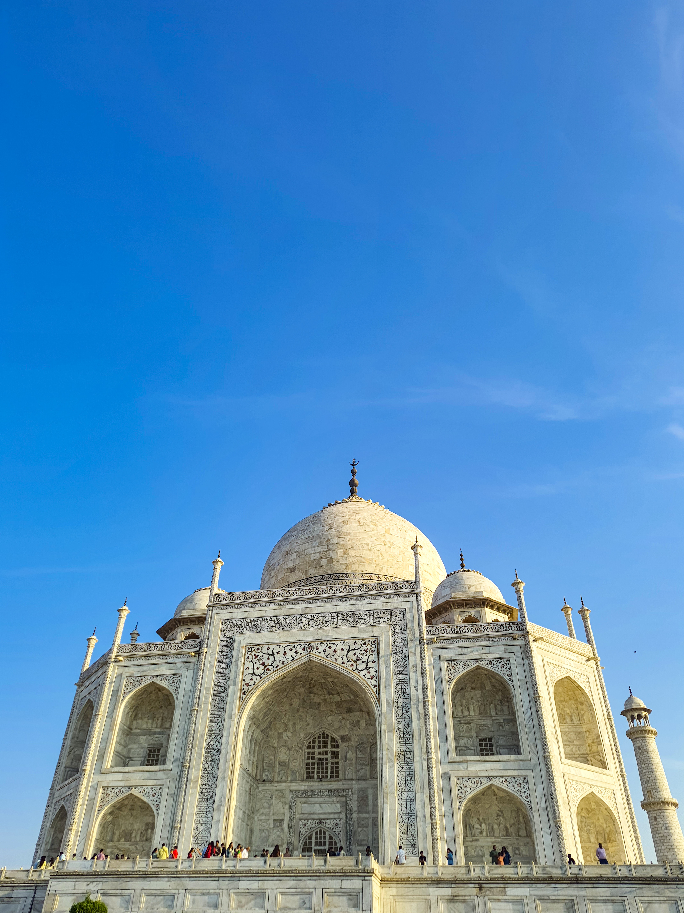
The Journey Begins
The trip to Agra actually began in Mumbai.
After work, I headed to Pune, where the journey properly started the following day. From Pune, we flew to Delhi and spent the night there. It was a short stop, but a comfortable one. We found a beautiful Airbnb, settled in for the night, and prepared for the next morning.
Agra was waiting.
Early the next morning, we booked an Uber and started driving towards Agra. The road from Delhi to Agra felt like the beginning of a transition — leaving behind the familiar rhythm of the city and slowly moving toward a place I had seen countless times in photographs but had never experienced in person.
We reached Agra at around 4 PM. We stopped for lunch on the expressway before continuing toward the city.
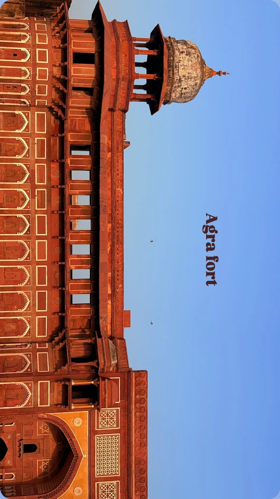
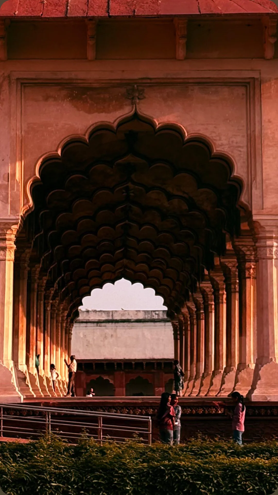
A Night in Delhi
Before heading to Agra, we spent a night in Delhi.
We stayed at THEHRAV HOMESTAY in Mahavir Enclave, Palam, Delhi. We found the stay through Google while looking for a well-rated place and booked it in advance.
The homestay was neat, clean and comfortable — exactly what we needed for a short overnight stay before starting early the next morning.
It became a quiet pause between two very different parts of the journey.
The next morning, we packed our things, booked an Uber and started our drive toward Agra.
Delhi → Agra.
And that's where the real adventure began.
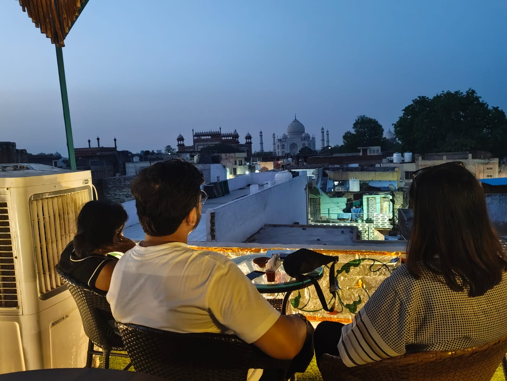
A Place to Stay
Our stay in Agra was at Joey's Hostel, very close to the Taj Mahal. We had booked it in advance after seeing its reviews and ratings online.
It turned out to be a great decision.
The hostel was neat, clean and full of travellers from different parts of the world. There was something special about being surrounded by people who had all arrived in Agra for different reasons, yet were all chasing some version of the same experience.
And the best part? The Taj Mahal was practically next door.
We dropped our luggage, checked in and didn't waste much time. There was still an evening to explore.
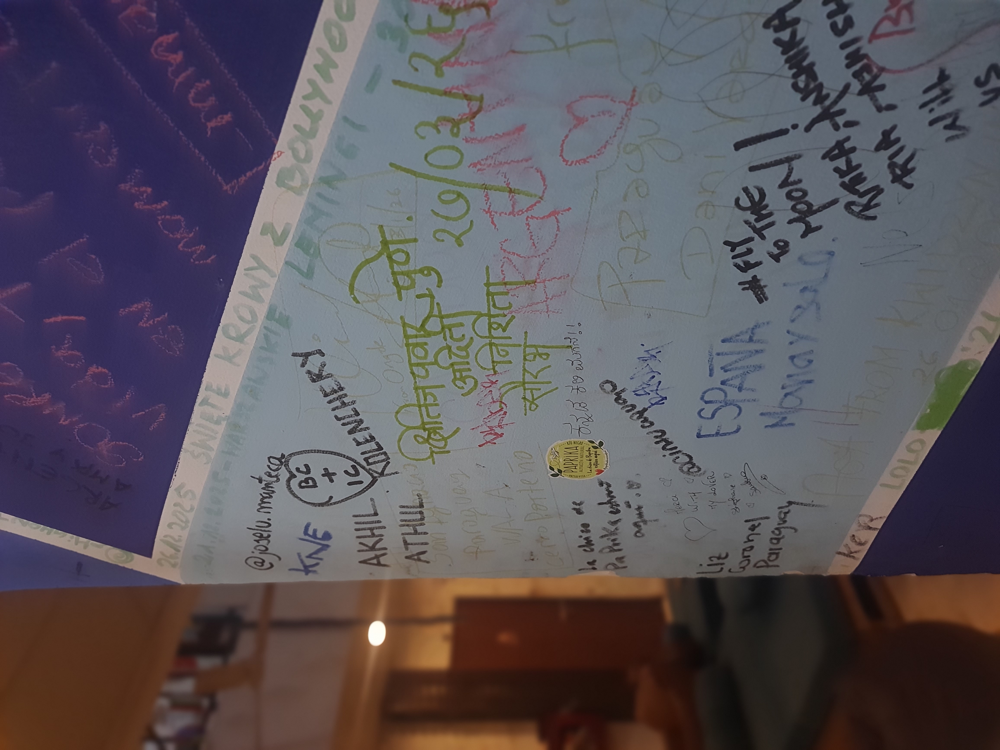
The Fort Before the Taj
Our first stop was Agra Fort.
We had already booked our tickets online, and because the fort closes in the evening, we went there almost immediately after checking in. From the hostel, we took an e-rickshaw. That short ride through Agra was itself part of the experience — the traffic, streets, people, shops and constant movement of the city.
Then suddenly, the scale changed.
Agra Fort is enormous. The fort was remarkably well maintained, and walking through its courtyards and red sandstone architecture gave us a very different perspective of Mughal history.
But what stayed with me most wasn't only the fort itself. It was the view.
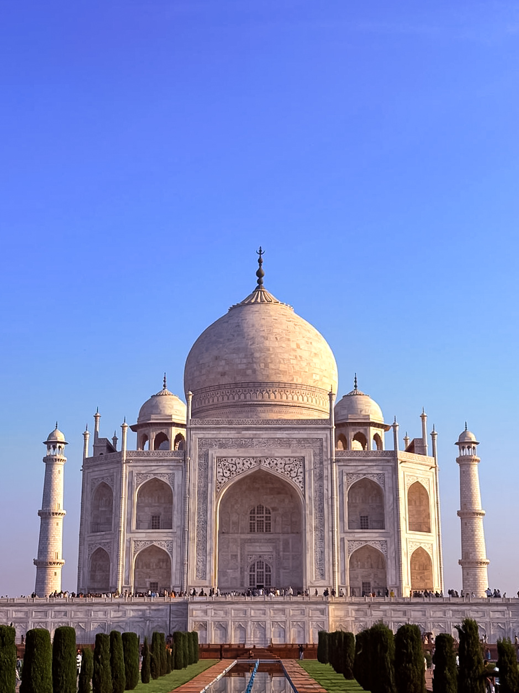
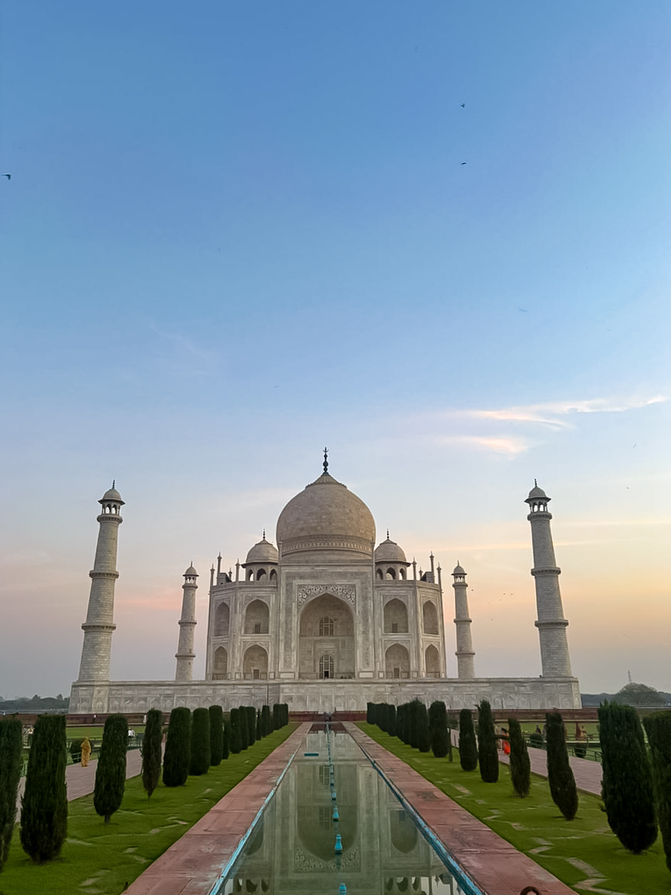
From the fort, we could see the Taj Mahal in the distance.
There is something strangely powerful about standing inside the place where Mughal emperors once lived and looking toward the monument built by Shah Jahan in memory of Mumtaz Mahal. The Taj wasn't just another monument in the distance. It suddenly felt connected to everything around it.
History became physical.
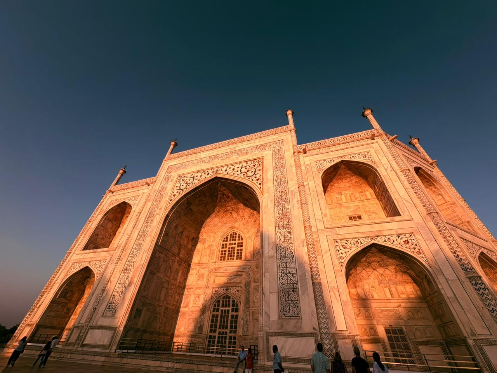
An Evening Above Agra
After the fort, we returned to the hostel. The evening turned out to be much quieter than the day.
We went up to the rooftop café, where the Taj Mahal was visible from the terrace. The sun was going down. The city was beginning to settle. And there it was — the Taj Mahal appearing above the rooftops.
That evening, we also celebrated Nishita's birthday at the hostel. It wasn't a grand celebration. Just friends, food, conversations, the rooftop, and the Taj in the background.
But somehow, that made it more memorable.
We knew the next morning would begin very early. So we went to sleep.
.jpg)
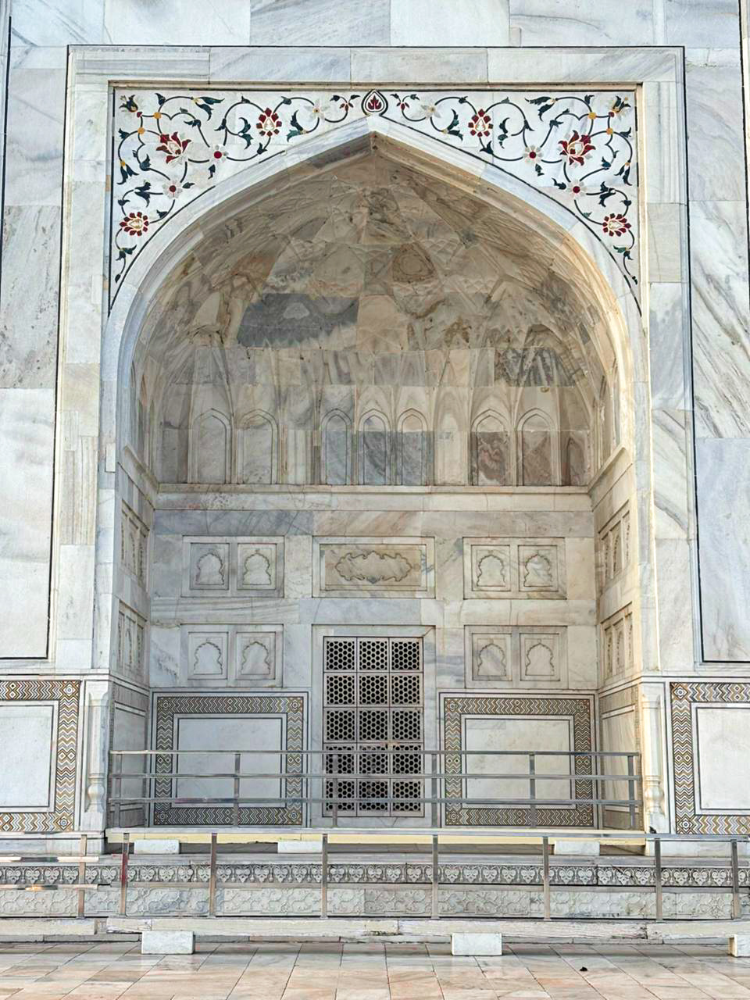
4 AM — The Taj Mahal
Our alarms went off around 4 AM.
We had booked the Taj Mahal tickets online before the trip because we wanted to enter as early as possible. Our friends had specifically planned this visit for the first hours of the day.
We reached the entrance while it was still dark. And there were already plenty of people waiting.
After the security check, we entered. The sky was still dark. The sun hadn't risen yet. And then we reached the famous entrance gate.
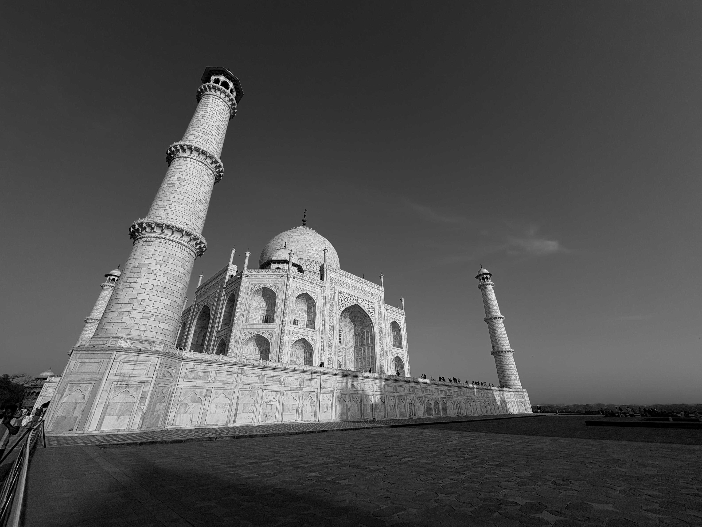
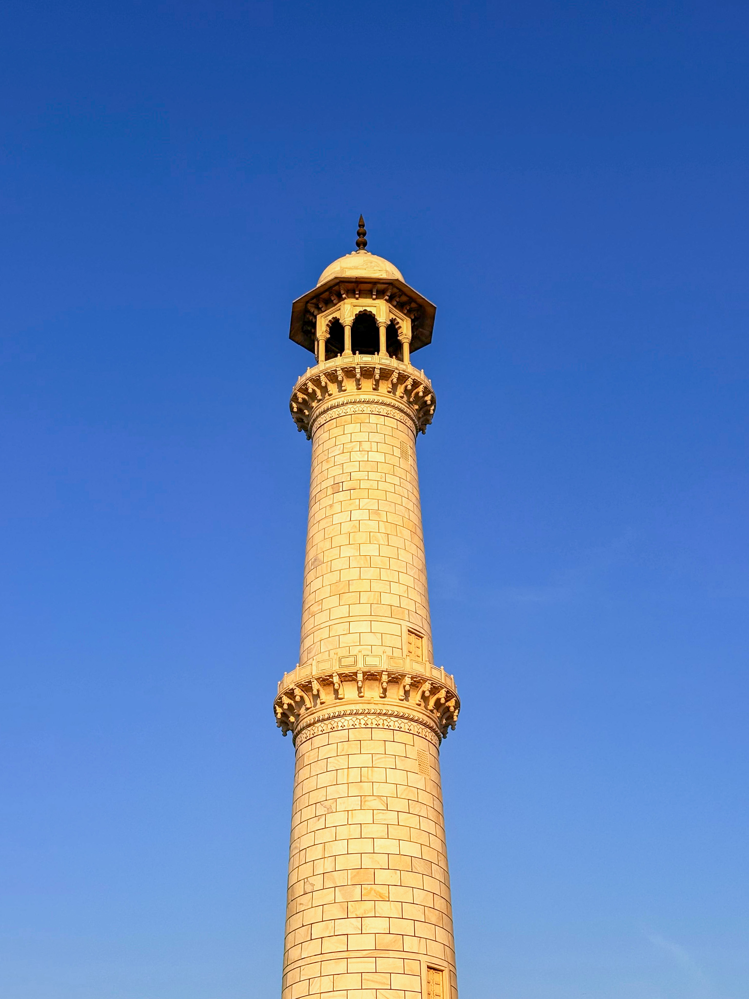
The First Glimpse
This was the moment I had been waiting for.
Through the great red sandstone gateway, the Taj Mahal appeared in the distance. For a few seconds, it didn't feel completely real. The framing of the gateway made the monument look almost like an illusion — perfectly centered, distant and quiet against the darkness of the early morning.
Then we walked forward. The garden slowly opened around us. The Taj became larger with every step. And the experience changed completely.
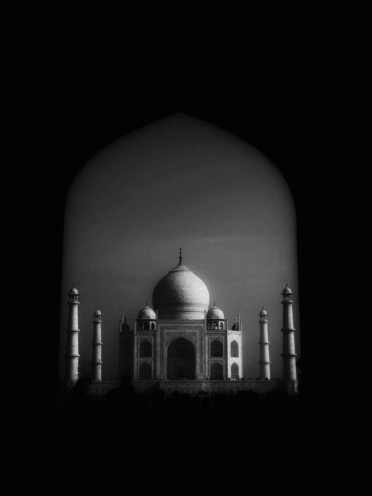
I had seen thousands of photographs of the Taj Mahal. I had read about its history. I had seen its architecture in books and on screens.
But none of that prepared me for its scale.
Standing there in person, it felt enormous. Quiet. Almost unreal.
This was the monument I had seen my entire life. And now I was standing in front of it.
The Taj Before Sunrise
The early morning was surprisingly peaceful. The crowds were there, but the atmosphere still felt calmer than it would later in the day.
We walked through the Mughal-style gardens, taking photographs and simply looking.
Eventually, we reached one of the most famous viewpoints associated with the Taj Mahal — the spot where Princess Diana was photographed during her visit to India.
Of course, I had to take my own photograph there.
But after taking the expected photograph, I found myself looking away from the camera again. Sometimes the photograph you came for isn't the photograph you remember.
.jpg)
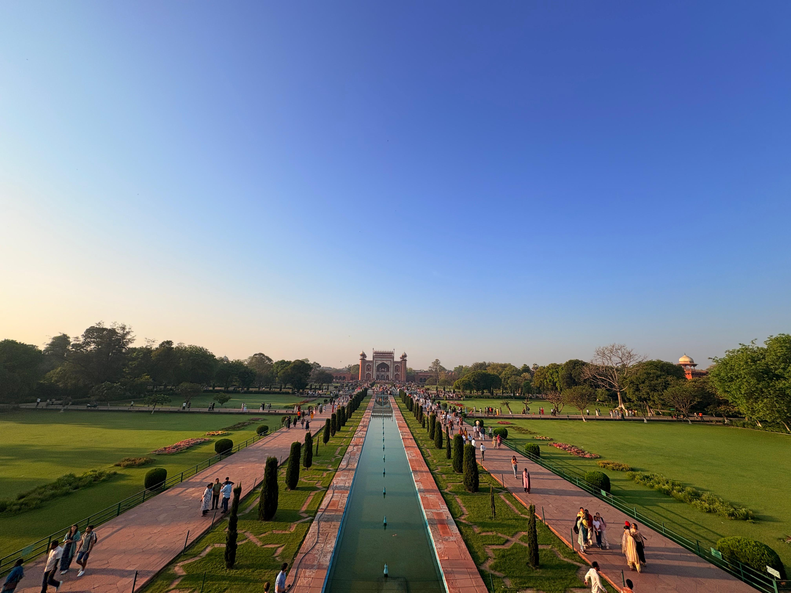
White Marble, Golden Light
We finally reached the marble platform. By then, the sun had started rising from the east. And something beautiful happened.
The white Makrana marble began to change. It caught the morning light and slowly took on a warm, golden tone. The monument didn't look the same anymore. It was changing minute by minute.
This was probably the most beautiful part of the entire visit.
I had already read about the Taj Mahal's architecture before coming here — its symmetry, Mughal design, gardens, marble, domes, minarets and intricate inlay work. But reading about architecture and standing inside it are two completely different experiences.
On paper, you understand the design. In person, you feel the scale.
The symmetry was almost impossible to ignore. Everywhere I looked, the architecture seemed carefully balanced. The marble reflected the changing light. The gardens extended outward in the classic Mughal charbagh style. The entire complex felt designed not simply as a building, but as a complete visual composition.
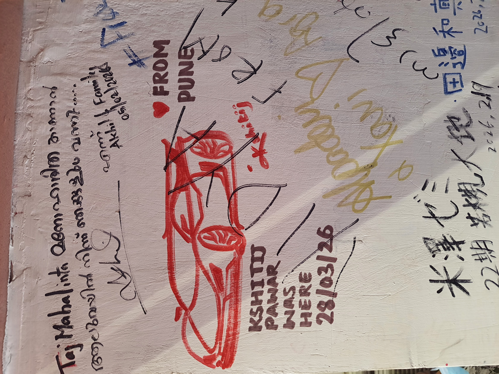
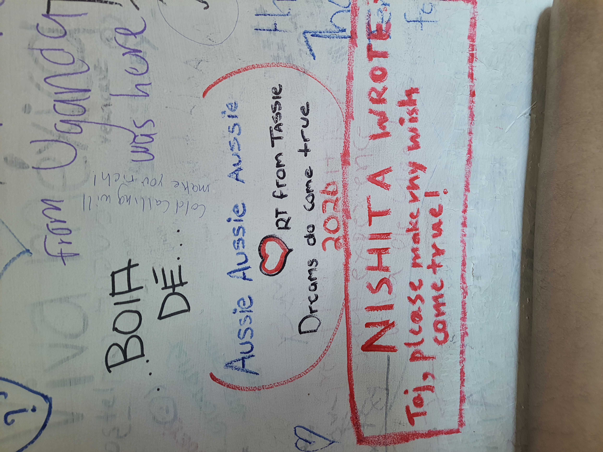
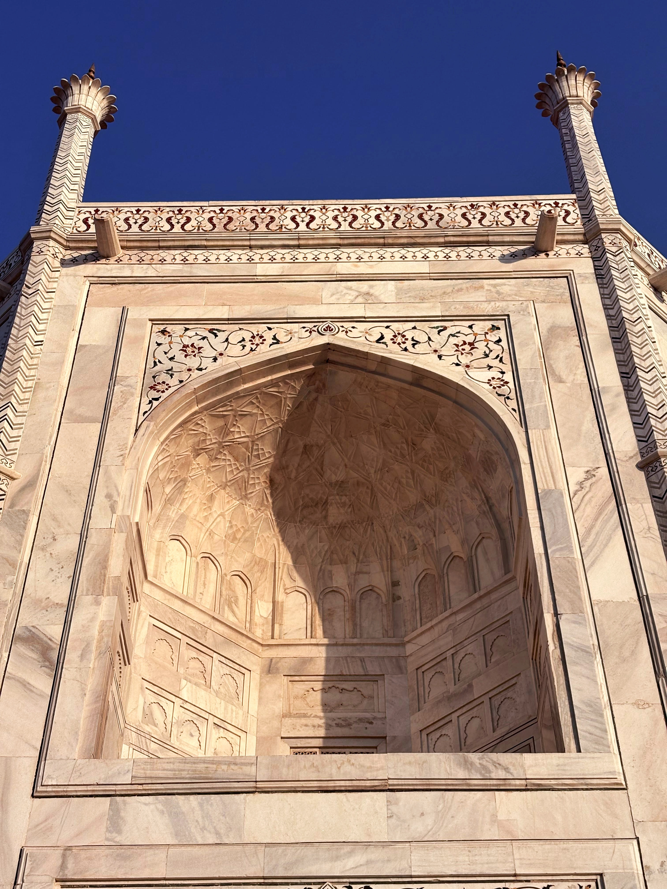
A Study in Symmetry
The Taj Mahal is more than its famous white marble façade. Its design brings together a monumental gateway, formal charbagh gardens, reflecting pools, the central mausoleum, a mosque and a guest house. The architecture combines symmetry, geometric planning, calligraphy, carved marble and pietra dura inlay.
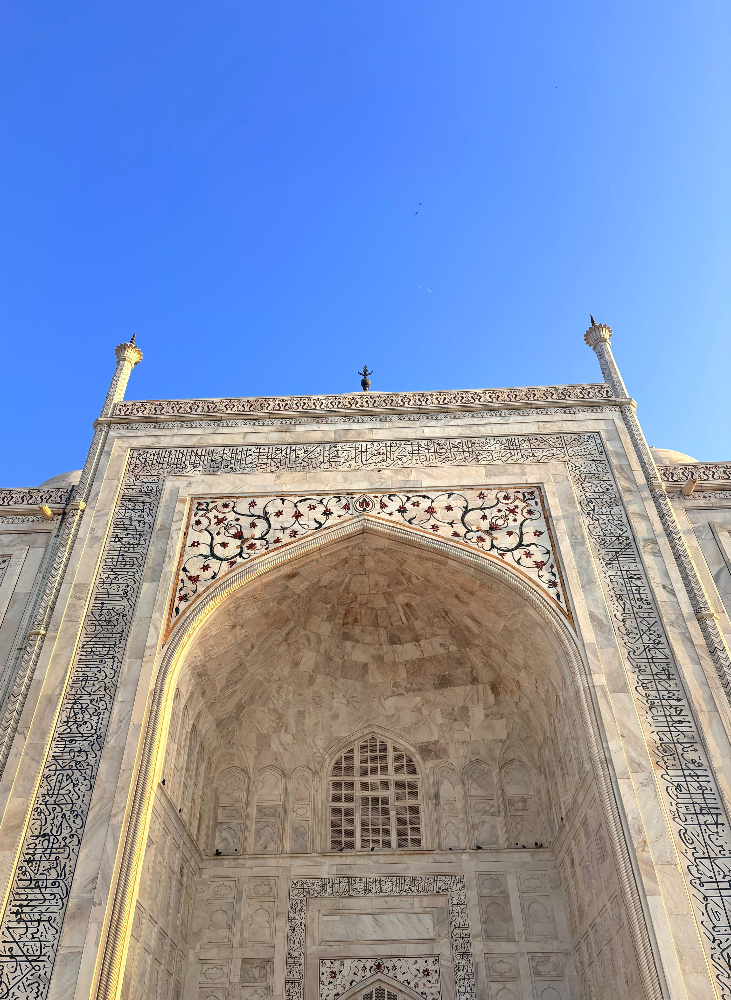
The white marble surfaces are enriched with intricate floral and geometric inlay using precious and semi-precious stones. The craftsmanship includes marble carving, calligraphy and pietra dura techniques that remain part of Agra's living craft tradition.
But knowing the history of the Taj is different from standing in front of it.
There is something strange about seeing a place you've encountered thousands of times in photographs. The scale, the silence and the changing light make the experience feel different from the image you carried with you.
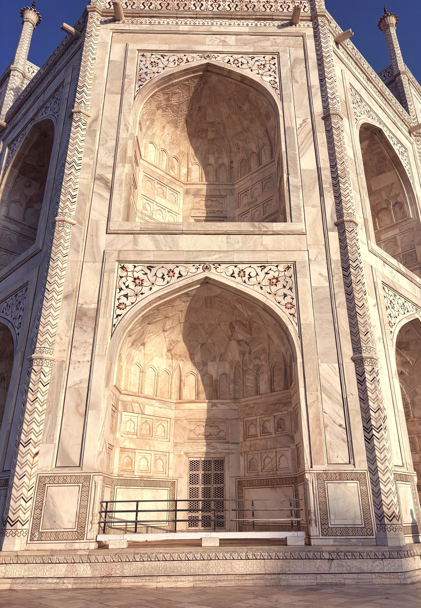
Beyond the Taj
After spending a long time around the monument, we walked through the gardens and around the complex.
From the rear of the Taj Mahal, the Yamuna River runs quietly behind it. The river, gardens and symmetrical architecture create a completely different view from the one most people see from the main entrance.
For a photographer, this was one of my favorite parts.
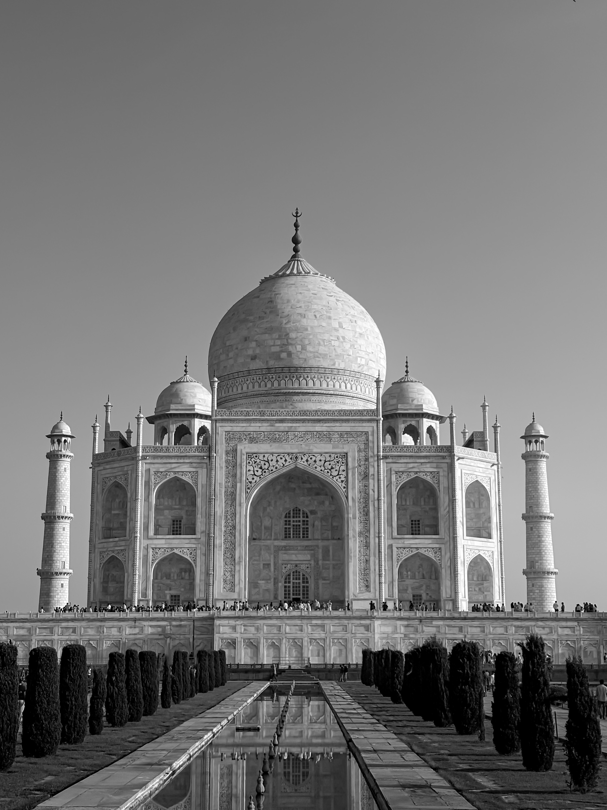
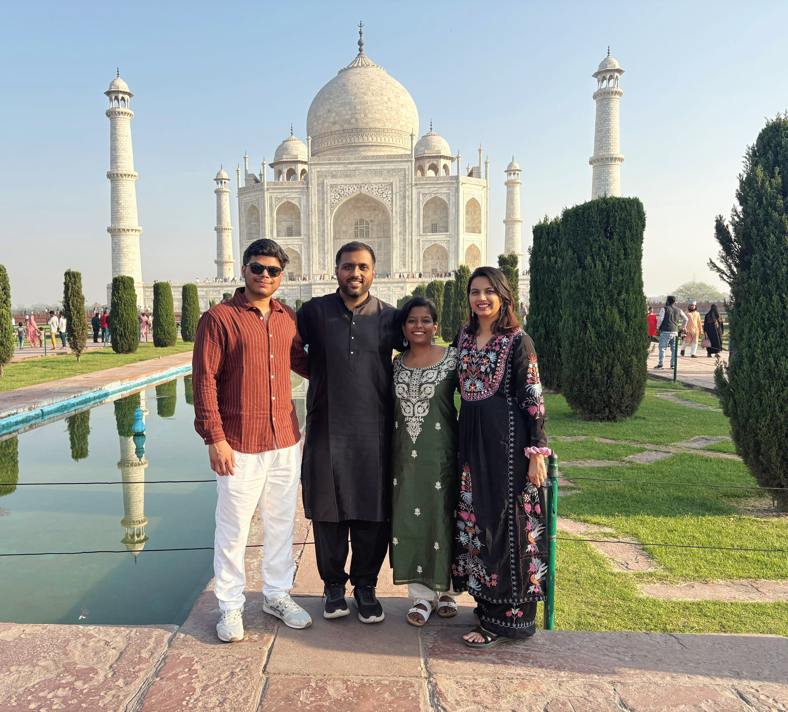
The Taj kept changing depending on where I stood.
Front. Side. Reflection. Detail. Distance. Close-up.
And every perspective told a slightly different story.
The City After the Taj
Eventually, it was time to leave.
After spending the morning at the Taj Mahal, we went for lunch and had some local food. No trip to Agra seemed complete without taking home some petha. So we stopped at an authentic petha shop and packed some for the journey back.
By then, the trip had started to feel less like a checklist of famous places and more like a collection of small memories:
The e-rickshaw ride. The view of the Taj from Agra Fort. The rooftop café. Nishita's birthday. The 4 AM alarm. The first glimpse through the gateway. The marble turning golden in the morning light. The quiet walk through the gardens. The taste of fresh petha.
The Journey Home
Our Rajdhani Express was scheduled from Agra in the evening.
We returned to the hostel, packed our bags, freshened up and headed toward the station.
The station brought us back into the familiar rhythm of travel — luggage, announcements, people rushing to platforms, and that strange feeling that a trip is already becoming a memory before it has actually ended.
The Rajdhani experience was comfortable. Clean seats. Fresh bedsheets. Good food. And eventually, a quiet train journey through the night.
After everything we had experienced over the previous few days, the train felt like the final chapter.
We slept. And by around 8 AM the next morning, we were back in Mumbai.
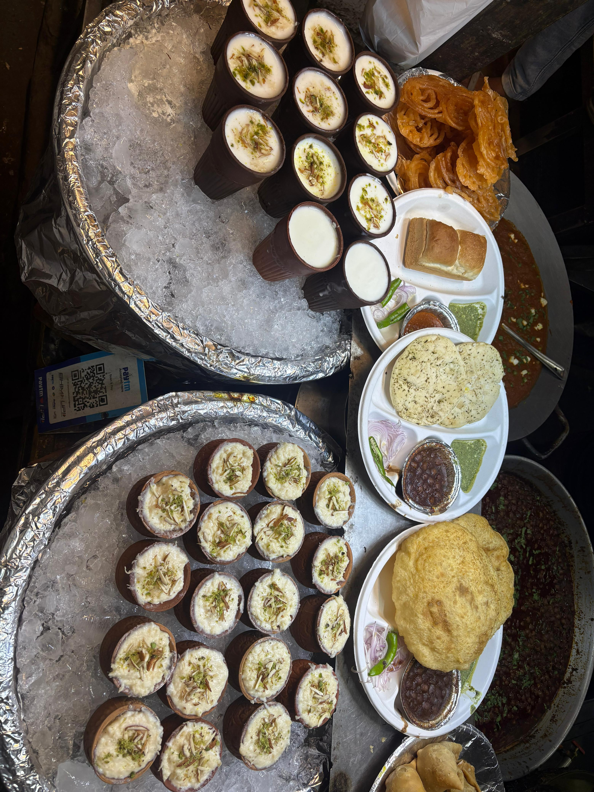
I came back with photographs, of course. But also with something harder to capture.
A feeling.
Agra had started as a destination on a map. Then it became an e-rickshaw ride through the streets. A red sandstone fort. A rooftop birthday celebration. A 4 AM wake-up call. A Taj Mahal appearing through a gateway before sunrise. White marble turning gold. People moving through gardens. The Yamuna flowing quietly behind the monument. Petha packed into our luggage. And finally, a train carrying us home.
Maybe that is what travel photography is really about. Not just photographing the places we visit. But collecting the small moments that make a place ours.
Some places are remembered for what you saw.
Others for what you felt.
— Saurabh